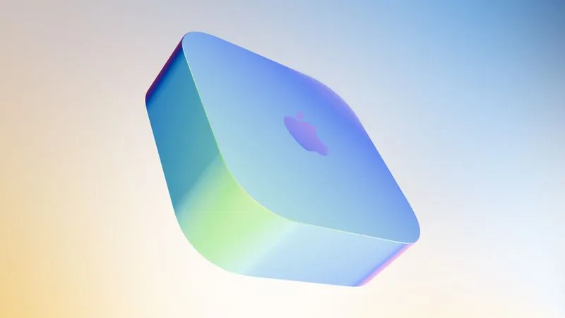

디자인
해당 매체는 현재 유출된 정보를 정리하며, 2026년용 Apple TV 4K가 기존의 모서리가 둥근 사각형 디자인을 유지하고 검은색 플라스틱 소재를 계속 사용할 것이며, 크기와 외관 측면에서 차이가 없을 것이라고 밝혔습니다.
성능
2026년형 Apple TV 4K의 가장 큰 특징은 A17 Pro 칩으로의 업그레이드입니다. 이 칩은 iPhone 15 Pro 시리즈에 처음 탑재되었으며, 현재 Apple TV에 탑재된 A15 Bionic 칩과 비교해 성능이 크게 향상될 예정입니다.
Apple A17 Pro 칩은 3nm 공정을 사용하며 하드웨어 가속 레이 트레이싱 및 하드웨어 가용 AV1 디코딩을 지원합니다. 또한, 이는 Apple의 현재 제품군 중 Apple Intelligence를 지원하는 가장 초기 세대의 칩입니다.
AI 기능
2026년형 Apple TV 4K는 새로운 Siri AI를 지원할 예정입니다. 굴먼은 올해 3월, 신형 Apple TV 4K의 하드웨어 준비는 이미 완료되었으나 Siri AI의 출시가 여러 차례 지연됨에 따라 출시 시기가 늦춰졌다고 밝힌 바 있습니다.
연결성
신형 Apple TV 4K는 Apple N1 네트워크 칩을 탑재하고 Wi-Fi 7를 지원할 가능성이 있으며, 차세대 라우터가 제공하는 6GHz 대역을 사용할 수 있습니다. 또한 다음과 같은 기술들을 지원할 것으로 예상됩니다.
- 블루투스 6.0
- Thread 스마트 홈 프로토콜
리모컨
Apple은 신형 Apple TV 4K를 위해 새로운 리모컨을 출시할 수 있으나, 현재 관련 정보는 많지 않습니다.
관련 소식
「4년 만의 변화: Apple tvOS 27 호환성 강화로 초기 Apple TV 4K 등 지원 중단」
「1337일 기록 경신 우려: Apple 신형 Apple TV 4K가 tvOS 27을 기다리며 역대 가장 긴 업데이트 공백기 직면」
「굴먼: Apple은 9월 iPhone 18 Pro 시리즈와 함께 신형 Apple TV 4K 및 HomePod 출시 계획」
총평
2026년형 Apple TV 4K는 A17 Pro 칩을 탑재하여 성능이 크게 향상되고 Apple Intelligence 및 새로운 Siri AI를 지원할 것으로 보입니다. 또한 Wi-Fi 7과 블루투스 6.0 등 최신 연결 기술을 포함하며, 외관은 기존의 디자인을 유지할 전망입니다.
产品发布预测
根据 MacRumors 的报道，Apple 有望在 2026 年 9 月的秋季发布会上推出新款 Apple TV 4K。该机型预计将搭载 A17 Pro 芯片，旨在支持 Apple Intelligence 和 Siri AI 功能。
核心硬件与性能升级
新款 Apple TV 4K 的主要技术亮点集中在处理器和人工智能能力的提升：
- 芯片型号：A17 Pro（采用 3 纳米制程）
- 关键特性：支持硬件加速光线追踪、硬件加速 AV1 解码
- AI 功能：作为首批支持 Apple Intelligence 的产品，将搭载全新的 Siri AI
外观设计与连接能力
在外观方面，新款设备预计延续现有设计风格，但在内部规格上会有显著提升：
- 外形设计：沿用现有的方形圆角设计及黑色塑料材质
- 网络芯片：可能搭载 Apple N1 网络芯片
- 连接标准：支持 Wi-Fi 7（可使用 6GHz 频段）、蓝牙 6.0 以及 Thread 智能家居协议
关于配套的 Siri 遥控器，目前相关线索较少。
总结
2026 款 Apple TV 4K 将通过搭载 A17 Pro 芯片实现性能跨越，从而支持 Apple Intelligence 和 Siri AI。该产品在保持外观一致性的同时，将大幅增强 Wi-Fi 7 等网络连接能力及智能家居兼容性。
デザイン
リークされた情報によると、2026年モデルのApple TV 4Kは、従来の角を丸めたスクエア型のデザインを維持し、黒色のプラスチック素材を採用する見込みです。サイズや外観において、現行モデルとの差異はないと報じられています。
パフォーマンス
2026年モデルのApple TV 4Kにおける最大の特徴は、A17 Proチップへのアップグレードです。このチップはiPhone 15 Proシリーズに初めて搭載されたもので、現在提供されているApple TVに搭載されているA15 Bionicチップと比較して、大幅な性能向上が見込まれます。
Apple A17 Proチップは3nmプロセスを採用しており、ハードウェアアクセラレーテッド・レイトレーシングおよびハードウェアによるAV1デコードをサポートしています。また、これはAppleの現行製品ラインナップの中で、Apple Intelligenceをサポートする初期世代のチップの一つとなります。
AI機能
2026年モデルのApple TV 4Kは、新しいSiri AIをサポートする予定です。情報筋によると、新型Apple TV 4Kのハードウェア準備は今年3月には完了していましたが、Siri AIのリリースが数回遅れたことにより、発売時期が延期されたとのことです。
接続性
新型Apple TV 4KはApple N1ネットワークチップを搭載し、Wi-Fi 7をサポートする可能性があり、次世代ルーターが提供する6GHz帯を利用できる見込みです。また、以下の技術もサポートすると予想されています。
- Bluetooth 6.0
- Thread スマートホームプロトコル
リモコン
Appleは新型Apple TV 4K向けに新しいリモコンを発売する可能性がありますが、現時点で関連情報は多くありません。
関連記事
「4年ぶりの変化：Apple tvOS 27の互換性強化により、初期のApple TV 4Kなどのサポートが終了」
「1337日の記録更新の懸念：新型Apple TV 4KがtvOS 27を待つことで、歴代最長のアップデート空白期間に直面する可能性」
「情報筋：Appleは9月にiPhone 18 Proシリーズと共に、新型Apple TV 4KおよびHomePodをリリースする計画」
まとめ
2026年モデルのApple TV 4Kは、A17 Proチップの搭載により性能が大幅に向上し、Apple Intelligenceや新しいSiri AIに対応する見込みです。Wi-Fi 7やBluetooth 6.0といった最新の接続技術を搭載しながらも、外観デザインは現行モデルを踏襲する方針のようです。
Design
According to leaked information, the 2026 Apple TV 4K is expected to retain its current rounded square design and black plastic construction, with no changes to its size or overall appearance.
Performance
The most significant upgrade for the 2026 Apple TV 4K is the transition to the A17 Pro chip. Originally introduced in the iPhone 15 Pro series, this chip will provide a substantial performance boost compared to the A15 Bionic currently used in Apple TV models.
The Apple A17 Pro chip utilizes a 3nm process and supports hardware-accelerated ray tracing and hardware-accelerated AV1 decoding. Additionally, it is one of the earliest generations of chips in Apple's current lineup to support Apple Intelligence.
AI Features
The 2026 Apple TV 4K is expected to support the new Siri AI. Reports from Gulmen indicate that while the hardware for the new model was ready earlier this year, its release was delayed due to several delays in the rollout of Siri AI.
Connectivity
The new Apple TV 4K may feature an Apple N1 network chip and support Wi-Fi 7, allowing it to utilize the 6GHz band provided by next-generation routers. It is also expected to support the following technologies:
- Bluetooth 6.0
- Thread smart home protocol
Remote
Apple may release a new remote for the updated Apple TV 4K, though specific information regarding its design or features remains limited.
Related News
"Changes after 4 years: tvOS 27 compatibility enhanced; support ends for early Apple TV 4K models"
"Risk of breaking a 1337-day record: New Apple TV 4K faces the longest update gap in history while waiting for tvOS 27"
"Gulmen: Apple plans to launch new Apple TV 4K and HomePod alongside the iPhone 18 Pro series in September"
Summary
The 2026 Apple TV 4K will feature a major performance leap with the A17 Pro chip, enabling advanced capabilities like hardware-accelerated ray tracing and Apple Intelligence. While it maintains its existing physical design, it will incorporate modern connectivity standards such as Wi-Fi 7 and Bluetooth 6.0.
